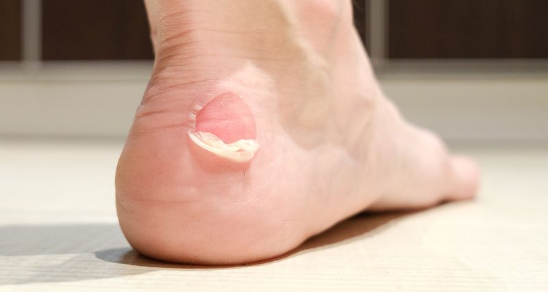

Blister
Harmfull and rare, consult a doctor
A blister is a small pocket of body fluid (lymph, serum, plasma, blood, or pus) within the upper layers of the skin, usually caused by forceful rubbing (friction), burning, freezing, chemical exposure or infection. Most blisters are filled with a clear fluid, either serum or plasma.However, blisters can be filled with blood (known as "blood blisters") or with pus (for instance, if they become infected).
The word "blister" entered English in the 14th century. It came from the Middle Dutch bluyster and was a modification of the Old French blostre, which meant a leprous nodule—a rise in the skin due to leprosy. In dermatology today, the words vesicle and bulla refer to blisters of smaller or greater size, respectively.
To heal properly, a blister should not be popped unless medically necessary. If popped, bacteria can enter. The excess skin should not be removed because the skin underneath needs the top layer to heal properly.
👉 who does blister causes
 A blister may form when the skin has been damaged by friction or rubbing, heat, cold or chemical exposure. Fluid collects between the upper layers of skin (the epidermis) and the layers below (the dermis). This fluid cushions the tissue underneath, protecting it from further damage and allowing it to heal.
Go without gloves in winter and you could get blisters from frostbite. Stay out in the summer sun too long and you might get sunburn. The same thing can happen if you handle frozen goods or touch the stove burner. Both cold and heat are described as “blistering” for good reason: Extreme temperatures can hurt your skin. Blisters are a sign of a type of second-degree burn called partial thickness.
Rub up against a pesky plant like poison ivy, and you might end up with blisters of another sort. They’re often a symptom of contact dermatitis, which happens when you touch something you’re allergic to. It doesn’t have to be poisonous, though. Some people react to soap, perfume, detergent, fabric, jewelry, latex gloves, or things used to make tools, toys, or other everyday objects.
A blister may form when the skin has been damaged by friction or rubbing, heat, cold or chemical exposure. Fluid collects between the upper layers of skin (the epidermis) and the layers below (the dermis). This fluid cushions the tissue underneath, protecting it from further damage and allowing it to heal.
Go without gloves in winter and you could get blisters from frostbite. Stay out in the summer sun too long and you might get sunburn. The same thing can happen if you handle frozen goods or touch the stove burner. Both cold and heat are described as “blistering” for good reason: Extreme temperatures can hurt your skin. Blisters are a sign of a type of second-degree burn called partial thickness.
Rub up against a pesky plant like poison ivy, and you might end up with blisters of another sort. They’re often a symptom of contact dermatitis, which happens when you touch something you’re allergic to. It doesn’t have to be poisonous, though. Some people react to soap, perfume, detergent, fabric, jewelry, latex gloves, or things used to make tools, toys, or other everyday objects.